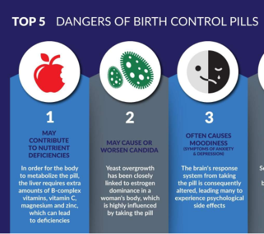
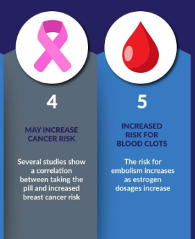

Reproductive Hormones
Callout
The sex glands or gonads—the testes in males and the ovaries in females—are the primary source of sex hormones.
- The steroid hormones that they produce—the androgens, estrogens, and progestins—have similar functions in regulating the development of male and female reproductive systems, sexual characteristics, and mating behavior.
- Androgen production is predominant in males, whereas estrogen and progestin production are predominant in females.


Ovary
Human females have a pair of ovaries suspended in the abdominal cavity.
- As well as producing the female gametes (ova, or eggs), the ovaries produce estrogens, which are steroid hormones that stimulate and control the development and maintenance of the female reproductive system.
- It also produces progestins.
The principal estrogen, called estradiol;
- stimulates the maturation of the sex organs at puberty
- the development of secondary sexual characteristics such as breast development
- the growth of body hair, and
- the widening of the pelvis; and the development of the sex drive.
The main progestin is progesterone, which is the steroid hormone that prepares and maintains the uterus for the implantation of a fertilized egg and the subsequent growth and development of an embryo.
- The synthesis and secretion of progesterone by cells in the ovaries are controlled by the release of follicle-stimulating hormone (FSH) from the anterior pituitary.
- The release of FSH and luteinizing hormone (LH) is controlled by gonadotropin-releasing hormone (GnRH) from the hypothalamus.

An oviduct leads from each ovary to the uterus. The uterus is a hollow structure with walls that contain smooth muscle.
- It is lined by the endometrium, which is formed by layers of connective tissue with embedded glands and a rich supply of blood vessels.
- If an egg is fertilized and begins to develop, it must implant in the endometrium to continue developing.
The lower end of the uterus, called the cervix, opens into a muscular canal, called the vagina, which leads to the exterior.
- Sperm enter the female reproductive tract through the vagina.
- At birth, the baby passes from the uterus through the vagina to the outside.
Oogenesis is the production of eggs, or ova, from oocytes in the ovaries by two meiotic divisions.

Menopause is the end of a female’s reproductive capability, after which menstruation ceases and female hormone levels drop.


The menstrual cycle is the monthly cycle of events in a sexually mature female that prepares the uterus for the implantation of a fertilized egg.

Male Reproductive Hormones


Callout
Testosterone also controls spermatogenesis, the process by which sperm cells are produced in the testes from precursor cells called spermatogonia. The organs that produce and deliver sperm make up the male reproductive system

Callout
The hormonal regulation of reproduction in the male, and the negative feedback systems that control the hormone levels.
- Hormonal birth control involves administering estrogen and/or progesterone, or chemical mimics of these hormones, to females in carefully controlled doses throughout the month in order to control the menstrual cycle and prevent ovulation.
- These hormones may be given as pills, injections, or patches, or as an implant that slowly releases hormones into the bloodstream.


